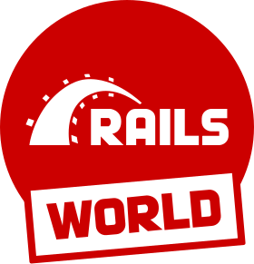
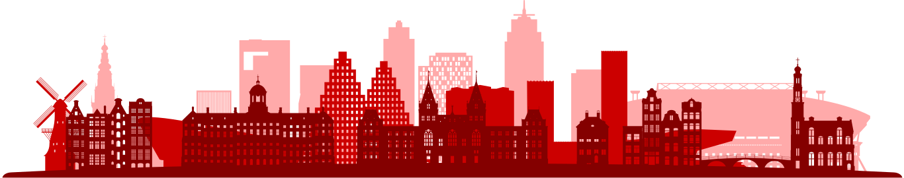

<div class="world">
  <section class="world__top common-background--white">
    <div class="common-background--grey common-shape--bottom-grey-down-left"></div>
    <a href="#skyline"></a>
  </section>
  <section class="world__top common-background--grey">
    <ul class="world__ul common-padding--bottom-small">
      <li class="common-content"><strong>Dates: </strong>5 & 6 Oct 2023</li>
      <li class="common-content">
        <strong>Location: </strong><a href="https://www.google.com/maps/place/Beurs+van+Berlage/@52.3750622,4.8961713,17z/data=!3m1!4b1!4m6!3m5!1s0x47c609c787f17ca7:0xfdc6eede688a772f!8m2!3d52.3750622!4d4.8961713!16zL20vMDNjdmx4" target="_blank">Beurs van Berlage, Amsterdam, NL</a>
      </li>
      <a class="common-button world__button common-button--version common-button--color-red" href="https://ti.to/rails-world/rails-world-2023" target="_blank">
        <span>Tickets available soon</span>
      </a>
    </ul>
  </section>
  <section class="world__bottom common-background--grey">
    
  </section>
</div>
